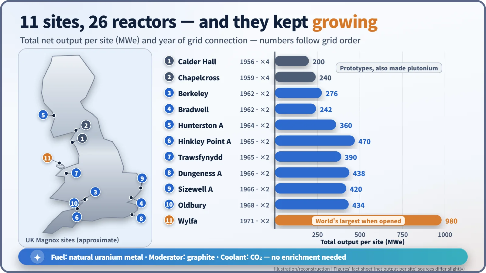
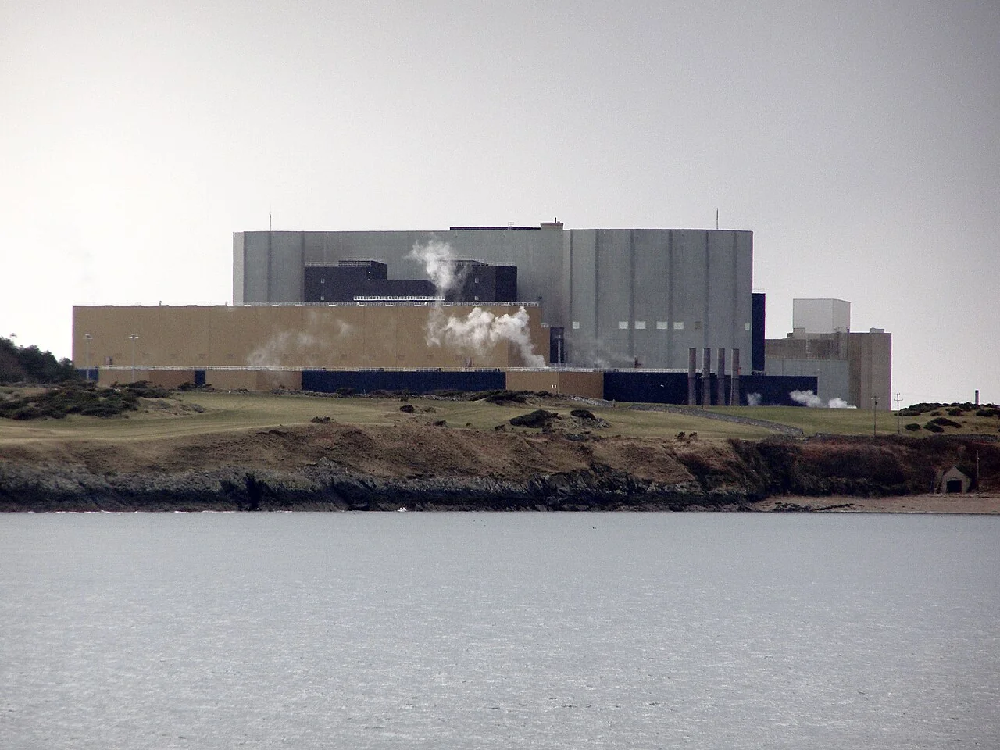
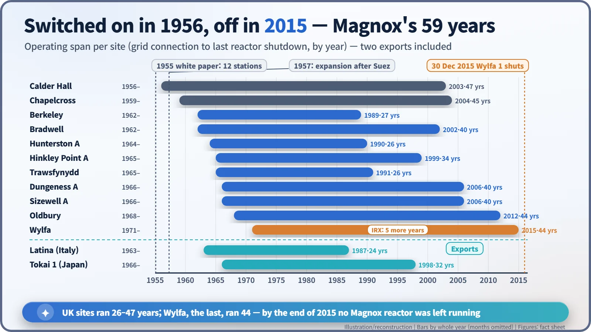

Nuclear History · 203
Natural Uranium in a Magnesium Coat — Britain's Magnox Reactors and Their 59-Year Generation (1956–2015)
Graphite, carbon dioxide and natural uranium in a magnesium coat gave Britain its first generation of nuclear power, and a single reactor type that lived for 59 years.
Britain's first generation of nuclear power stations ran on natural, unenriched uranium, wrapped in a magnesium alloy that gave the reactor type its name: Magnox. Between 1956 and 1971 Britain built 26 of them at 11 sites, and when Wylfa 1 on Anglesey shut down on 30 December 2015, the last Magnox reactor in the world went quiet.
An obituary for a reactor
Magnox. Born 1956 in Cumberland, England. Died peacefully on 30 December 2015 on the island of Anglesey, Wales, aged 59. Survived by memories of 26 reactors in Britain and one each in Italy and Japan. Best known for making electricity without enriched uranium.
A tongue-in-cheek obituary, but every line of it is true. On 30 December 2015, unit 1 at Wylfa, on the north coast of Anglesey, shut down, and with it the last Magnox reactor operating anywhere in the world. Site director Stuart Law called it "a safe and dignified end to the generation of electricity at Wylfa, and indeed for Magnox." So what kind of life had this reactor lived? [1]
Named after its coat
Magnox is short for "magnesium non-oxidising", the name of the magnesium-based alloy used to clad the fuel. The reactor type took its name from the metal jacket around its fuel. The recipe had three ingredients:
- Fuel: rods of natural, unenriched uranium metal.
- Moderator: graphite, which slows neutrons down so that they are more likely to cause fission.
- Coolant: carbon dioxide gas, blown through the core to carry heat to the boilers.
Why this combination? In the years after the Second World War, Britain had little capacity to enrich uranium. Natural uranium contains only about 0.7% of the easily fissioned uranium-235, so every neutron counts. Graphite, CO₂ and a magnesium alloy all absorb few neutrons, which made a chain reaction possible without enrichment. To get the heat out, the cladding was covered in closely spaced cooling fins. [2] [5]
"Twelve stations in ten years"
The first Magnox reactors were the small dual-purpose units at Calder Hall, which also produced plutonium. Their construction was overseen by Christopher Hinton (1901–1983), head of engineering and production at the UK Atomic Energy Authority. While Calder Hall was still being built, on 15 February 1955, the Minister of Fuel and Power, Geoffrey Lloyd, presented the white paper A Programme of Nuclear Power to the House of Commons. Over about ten years, he said, "we should have 12 large nuclear power stations", at a cost of "about £300 million for the provisional programme of the first 10 years". The stations were to be built by private industry and owned and run by the electricity authorities. [4] [6]
Then came the Suez crisis of 1956 and fresh worries about coal and oil supplies. In April 1957 the government proposed raising the target to 5,000–6,000 MWe. That same year Hinton became the first chairman of the new Central Electricity Generating Board (1957–1964). Having built the reactors, he now sat on the side that bought them. [2]
Bigger with every site
The first purely commercial series began at Berkeley and Bradwell, both of which started generating in 1962. After that, rival industrial consortia redesigned and enlarged the reactors at almost every site. Output per reactor climbed nearly tenfold, from about 50 MWe at Calder Hall to 490 MWe at Wylfa. Coolant pressure rose from about 7 bar to around 26 bar, and the last two stations, Oldbury and Wylfa, swapped steel pressure vessels for prestressed concrete (concrete held in compression by tensioned steel tendons). [2] [5]

Between 1956 and 1971, Britain built 26 Magnox reactors at 11 sites, with an installed capacity of about 4,200 MWe according to the World Nuclear Association. Fewer units were built than the 1957 plan foresaw, but the later ones were much larger. Wylfa (2 × 490 MWe) was the most powerful nuclear station in the world when it opened in 1971 and supplied about 40% of Wales's electricity. The design was also exported: Latina in Italy (160 MWe, 1963) and Tokai 1 in Japan (166 MWe, 1966). The figure of 26 counts British reactors only; with the two exports, 28 Magnox reactors were built worldwide. [1] [2] [5]

The price of a magnesium coat
The features that made Magnox possible also limited it. Magnesium alloy cannot take high temperatures, so the gas could not be run very hot, and natural uranium fuel needed a large core. Thermal efficiency rose only from about 22% in the first units to about 28% in the later ones. Carbon dioxide also slowly oxidised mild steel components, and some stations had to run cooler and at lower power. Latina, for example, was derated from its design 210 MWe to 160 MWe. [2] [5]
The fuel was awkward at the back end too. Magnox cladding corrodes if spent fuel sits in water for too long, so the fuel had to be reprocessed rather than stored long-term, which added to the programme's costs. The Magnox reprocessing plant at Sellafield, with a capacity of 1,500 tonnes a year, opened in 1964. It closed in July 2022 after reprocessing all of Britain's Magnox fuel. [3]
Sharing the last fuel
From the late 1980s, Magnox stations began to close one by one, and Magnox fuel manufacture ended in May 2008. Wylfa, originally due to close in 2010, found a workaround: Inter-Reactor Fuel Transfer (IRX), moving partly used fuel from unit 2 into unit 1. With regulatory approval, unit 2 stopped in April 2012 and unit 1 ran on for about five more years, to the end of 2015. According to World Nuclear News, the extra revenue from the Wylfa and Oldbury extensions, about £1 billion, went to decommissioning and clean-up. [1] [3]

Britain then moved to a second generation of gas-cooled reactors using enriched uranium oxide fuel, and Magnox remained a single generation. Still, a reactor that made electricity from unenriched uranium for well over half a century stands at the start of British nuclear power, and of its long experience in decommissioning.